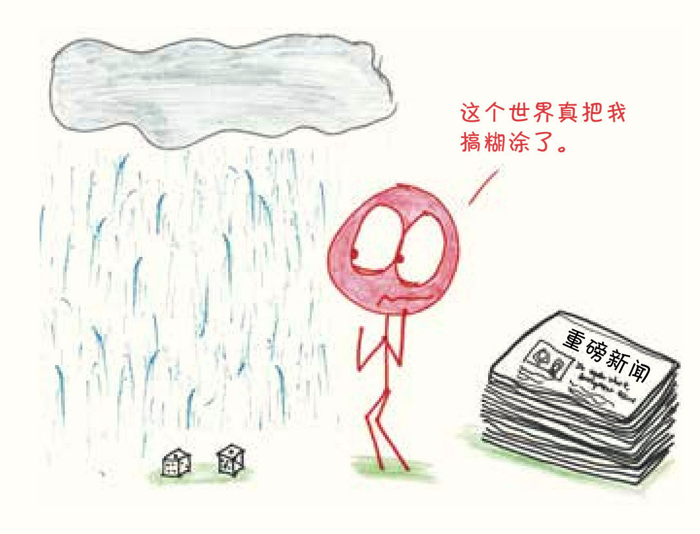
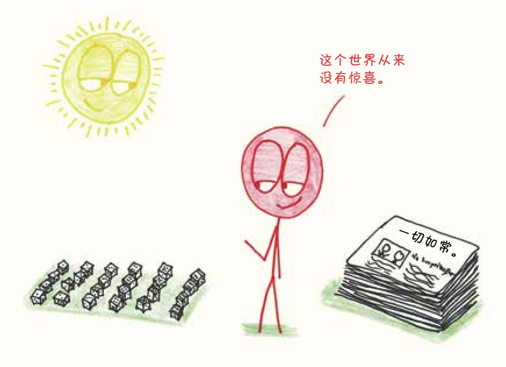

你抛过硬币吗？我猜一定抛过，除非你穷得身无分文，或者富得不屑于用硬币。再让我猜猜，虽然硬币落地时，正面和反面朝上的概率都是50%，但你最近几次抛硬币的结果并不是一半正面一半反面，对吗？要么总是正面，要么总是反面，你得到的结果可能是100%的正面，或者是0%的正面。
生活中就是这样充满了随机事件：意想不到的列车延误、出人意料的转败为胜、不知从哪儿冒出来的停车位……在瞬息万变的现实世界里，任何事情都有可能发生，但如果你想问未来会发生什么，命运却永远不会回复。

不过，如果能抛一万亿次硬币，你就会发现自己正走进一个截然不同的世界：在那片大陆上，一切都条理清晰并长期处于平均状态。在那里，有一半的硬币落地时正面朝上，有一半的新生儿是男孩，发生概率为百万分之一的事件真的在一百万次之内只发生一次。在这个晴朗的理论世界里，奇闻和巧合是不存在的。它们就像扔进大海的石子，淹没在所有可能性中。

而概率，则是那个世界和现实世界的纽带。正因为我们所熟知的世界充满了未知，概率才有存在的必要；那个我们无法触及的世界平静而永恒，概率因而有规律可循。概率是一个双重身份的公民，每个爆炸性的头条新闻和名人的人设崩塌，都能被概率化解为从不计其数的牌堆中抽出的一张牌，或是从深不见底的水罐中倒出的一杯水。尽管我们人类终有一死，永远无法踏上永恒的土地，但通过概率，我们得以窥见永恒世界的一角。